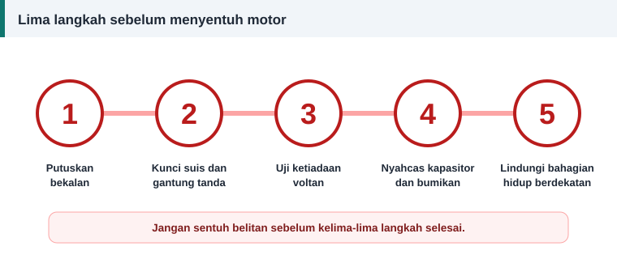

Panduan bengkel
Keselamatan Semasa Membaiki dan Menguji Motor Elektrik
Tiada motor yang cukup mustahak untuk dibaiki dengan mengorbankan keselamatan. Peraturan di bawah ringkas dan mesti dipatuhi setiap kali, tanpa pengecualian.


Lima langkah sebelum menyentuh motor
- Putuskan bekalan. Buka pengasing atau pemutus litar. Jangan hanya bergantung pada butang henti.
- Kunci suis dan gantung tanda amaran supaya tiada orang menghidupkannya semula.
- Uji ketiadaan voltan pada terminal motor dengan penguji yang diketahui berfungsi. Uji penguji itu sebelum dan selepas digunakan.
- Nyahcas kapasitor dan bumikan konduktor.
- Lindungi bahagian hidup yang berdekatan dengan penghadang atau penutup.
Bahaya elektrik semasa ujian
- Penguji penebatan mengeluarkan voltan tinggi. Jangan sentuh terminal semasa ujian, dan nyahcas belitan selepasnya.
- Bumikan rangka motor semasa ujian larian.
- Gunakan bekalan ujian yang dilindungi fius atau pemutus litar dan peranti arus baki.
- Jangan menguji seorang diri pada voltan berbahaya.
Bahaya mekanikal
- Ikat motor pada bangku sebelum dihidupkan. Tork mula boleh menggolekkan motor yang tidak diikat.
- Tanggalkan kunci aci atau lekatkan dengan pita supaya tidak terpelanting.
- Jauhkan pakaian longgar, rambut dan tali daripada aci yang berpusing.
- Gunakan alat angkat untuk motor berat.
Haba dan api
- Ketuhar pembakar menghasilkan asap. Pengudaraan dan pematuhan arahan pengilang adalah wajib.
- Varnis dan pelarut mudah terbakar. Jauhkan daripada api dan percikan.
- Stator yang baru keluar dari ketuhar kelihatan sama seperti stator sejuk. Tandakan dan biarkan sejuk.
Habuk dan bahan kimia
- Pakai pelindung pernafasan semasa mengikis penebat lama dan semasa menyembur.
- Motor yang sangat lama mungkin mengandungi bahan penebat berbahaya. Jika ragu, jangan kikis dalam keadaan kering.
- Baca risalah data keselamatan bagi varnis dan pelarut.
Siapa yang patut melakukan kerja ini
Di Malaysia, kerja pemasangan elektrik dikawal selia dan memerlukan orang kompeten. Melilit semula motor di bangku boleh dipelajari, tetapi penyambungan motor kepada pemasangan tetap patut dibuat oleh orang yang berkelayakan. Rujuk Suruhanjaya Tenaga untuk keperluan semasa.
Senarai semak ringkas
- Bekalan sudah diasingkan dan dikunci?
- Ketiadaan voltan sudah diuji?
- Kapasitor sudah dinyahcas?
- Motor sudah diikat dan rangkanya dibumikan?
- Pelindung diri sudah dipakai?
Jika mana-mana jawapan ialah tidak, berhenti dahulu.
Rujukan dan bacaan lanjut
Artikel berkaitan
Ujian Megger: Cara Mengukur Rintangan Penebatan Motor
Ujian rintangan penebatan mendedahkan belitan lembap, kotor atau rosak sebelum motor dihidupkan. Ikuti prosedur, voltan ujian dan nilai minimum yang disyorkan piawaian IEEE 43.
Kapasitor Mula dan Kapasitor Jalan: Perbezaan, Nilai dan Cara Menguji
Kapasitor mula memberi tork permulaan, kapasitor jalan kekal bekerja sepanjang masa. Ketahui perbezaan binaan, kadaran, tanda kerosakan dan cara menggantinya dengan selamat.
Alat dan Bahan Bengkel Lilitan Semula Motor
Senarai alat ukur, alat melilit, bahan penebat dan peralatan ujian yang diperlukan untuk memulakan kerja lilitan semula motor, daripada mikrometer hingga penguji penebatan dan ketuhar.